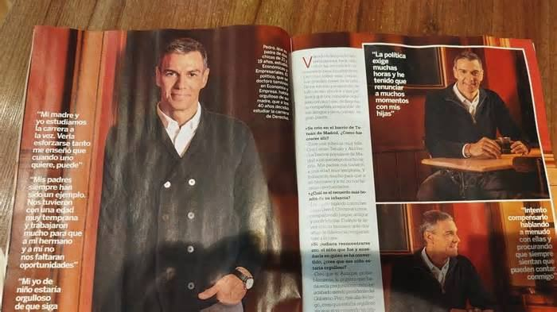

Sánchez defiende en ‘Lecturas’ la “fortaleza y humanidad” de Begoña Gómez: “Es un privilegio tenerla a mi lado”

El presidente confiesa que “no ha sido fácil” conciliar su carrera política con la crianza de sus hijas: “He tenido que renunciar a muchos momentos con ellas”
El presidente del Gobierno y candidato del PSOE a las elecciones del 29-N, Pedro Sánchez, protagoniza la portada de la revista Lecturas de esta semana . Se trata de la primera entrevista del líder socialista a una revista del corazón y en ella hace un repaso de su vida desde la infancia, así como la relación con su mujer, Begoña Gómez, quien asegura que es “una fuente de inspiración” por “su fortaleza y por su humanidad”: “Es un privilegio para mí tenerla a mi lado y aprendo de ella cada día. Nos hemos sostenido la mano en los momentos más difíciles. Y no imagino mi vida sin ella”.